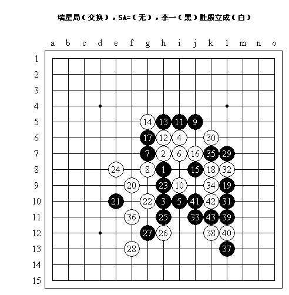
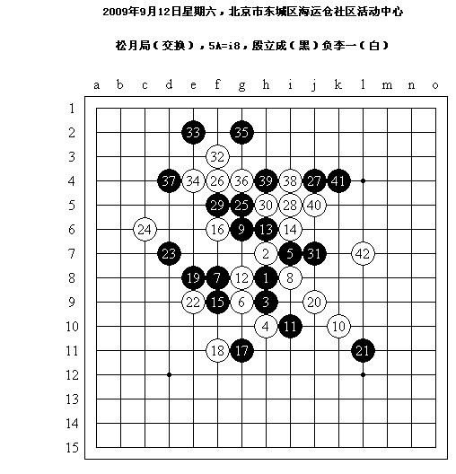
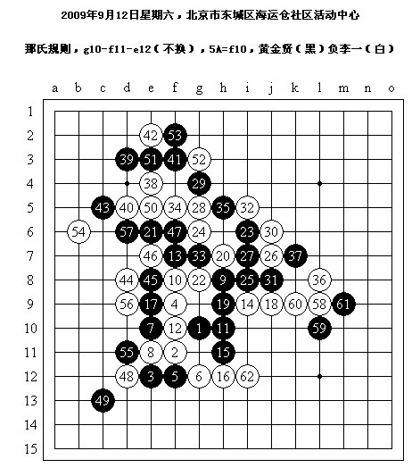
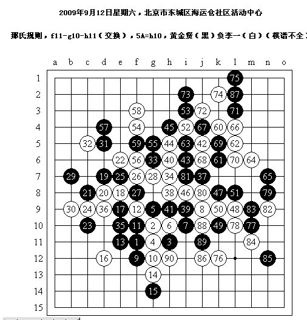

四局简评
#1 四局简评作者：茗弈宽容 发表时间：2009-9-17 15:50:04
2009年9月12日星期六，北京市东城区海运仓社区活动中心

这里稍微提一下，我走完黑5之后殷老师直接应的白6，当然这算是熟人之间平常对弈的一种默契，但在正式比赛中，似乎白方有权放弃黑方的五手二打，或者说如果直接应对白6的话，就视为“白方放弃挑选五手二打的权利”，棋局依然正常进行。
11手！最近在网上经常疏星执白，然后被高手们啪啪啪干掉，一直在思考一些问题，比如这个11，或者比如疏星，大家都觉得白棋不错，但是又不知道如何不错，因而在心理上产生了奇妙的反映，很可能肆意挥霍其实并不存在的优势，大多数这个11的对局中（我执黑），有一定水平的对手都没能在我的能力范围之内——“我认为我没出现任何失误”——完整地在这个局面下把我赢下来。这种现象令人十分担忧，这和知道花月是必胜但是不会走必胜定式又是很不同的，后者经过一定时间的实力提升、研究棋谱是一定可以避免的，特别是当走错定式时可能明显地采用特别的手段来改变局势。但前者与其说是技术上的孱弱，不如说是心理因素在作怪，这样的问题可能部分高手也都是存在的。当局面比较趋于平衡时，如果坚持认为一方有利的话，很可能错失很重要的机会。
——上面只是一些题外话，毕竟我不知道对手的想法，理论分析只是理论上的事情，接下来还是回到对局：16-j9亦常见，17是同样可行的应对，这里我喜欢18-19，以下19-i4不可行，19-18，20-29，22-32，应该算是很有趣的局面。我之所以认为19位的关键，是因为19占据之后如果再有比较自由的机会占据32位，可以做出很漂亮的VCF，而并不一定依赖岌岌可危的3、5构成的活二。19直接占到关键一点，23如何选择？其实有时候可以很简单地处理这个问题：23位有一个双三杀，当然是挡上两个跳二，又能构成一个眠三，还能阻碍8向左上的借用——这样简单的思路往往是很有效的。24积极？局后分析24-25更好，之后25两边似乎都可行，但比起占不到优势的左边而言，防在下边似乎更有韵味。实战中25～28定型，以下白棋失先的状态往往在走出后才恍然大悟，29强攻！30是一眼可见的强防——同时也是必败的一手，当然这是复盘分析的结果，但我确实意识到应对这个30的最强一路杀法已经出现在眼前——33！关于32起白棋的各种防守，有兴趣的朋友可以试着拆一下看看黑棋如何胜。

本想考虑世锦赛上吴镝胜中村茂的那个变化，不料9改变了选择，由于f7的关键点可以做杀，因此这里12-j11不成立，事实上前12手都是定式，以下13-15……实战的13？！14-j8似乎是强防，以下黑棋无法取胜？！但在陌生的局面下，我只能力所能及考虑跟过去防守，以下几手都是很痛苦的抉择，白棋一阵受虐……这里20是个要点，17之后就该冲的，当然若是实战19-20当然也是复杂的变化。25是否急躁？刚好给白棋弄出了一套小巧可爱的VCT，黑棋的进攻也不得不有所顾忌了。正当我考虑29-38的应对时，实战29出现缓手？这样的局势下也很难再采取什么平稳的手段了——30！31？36位的禁手配合白棋仅有的几个连接直接导致了黑棋形状崩溃直至必败。

黄金贤主动提出尝试新规则，那我恭敬不如从命……前十手很难说哪手好或哪手不好，14是很有意思的防守，与14-15交换相比，为17位保留了更强的连接，15直接关键点，16临时的选择，16-19交换的话，在右边上下控难以兼顾，同时左边的部分优势将被封锁，这样17的位置也已经被迫不能再缓下去了。18手再突击！19必然，否则白棋局部形状很不错，但20占据后又对没有VCT的黑棋是一个威胁。以下23时机重要！交换至27，黑棋依然保有VCT，又是一串稳定局势的交换之后——36！局面已经明朗了，白棋若能在左上以先手结束交换的话，才能放手在右下展开进攻——57防守后，我成功了。61后，在我未作出任何思考之前我想到了世锦赛上中村茂对冈部宽的24手，尽管几乎没有任何相同点，但确实帮助我立刻找到了62白必胜！（以下63-j11，64-i11，66-i13，68-k12黑投了，忘了打了orz）

因为黄金贤晚上还有事，于是这盘棋每人10分钟包干，其实我的快棋水平是相当差的……随便开局，17-18明显更好，以下左边双方纠缠……好像没杀……52起开始扩大优势，越下黑棋优势越大，64后黑棋有VCF，我们俩都没看到，66后还是有，他看到了，68之后黄金贤说：“我走的是这手（67）啊？！”orz 75之后76之前在左上有一些交换，把局面稳定住，不过我忘记具体招法了（最神奇的是不知道为啥我竟然是先手结束）……80后黄金贤十分诧异地发现这竟然是个向
#2 Re:四局简评作者：茗弈宽容 发表时间：2009-9-17 15:52:46
 狠稀饭看李一老师的棋评.
狠稀饭看李一老师的棋评.#3 Re:四局简评作者：茗弈小刀 发表时间：2009-9-17 15:54:48
李老师很棒!棋好,实战解读强,又肯热心帮助人,是我们学习的榜样!#4 Re:四局简评作者：茗弈求学 发表时间：2009-9-17 16:00:53
学习了,谢谢李老师.#5 Re:Re:四局简评作者：醉了 发表时间：2009-9-17 16:03:13
引用：加一条,李老师长得也非常帅滴!
原文由 茗弈小刀 发表于 2009-9-17 15:54:48 :
李老师很棒!棋好,实战解读强,又肯热心帮助人,是我们学习的榜样!
#6 Re:四局简评作者：wd1988 发表时间：2009-9-17 16:13:38
四局全胜了？
#7 Re:四局简评作者：刀魂 发表时间：2009-9-17 20:24:42
 枪银
枪银#8 Re:四局简评作者：高星 发表时间：2009-9-18 8:58:09
瑞星的那个19好弱的